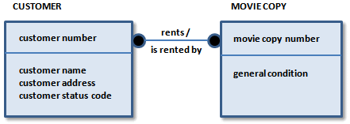

A many-to-many relationship is also known as a nonspecific relationship. A many-to-many relationship represents a situation where an instance in one entity relates to one or more instances in a second entity, and an instance in the second entity also relates to one or more instances in the first entity. In the video store example, a many-to-many relationship occurs between a CUSTOMER and a MOVIE COPY. From a conceptual point of view, this many-to-many relationship indicates that:
You typically use many-to-many relationships in a preliminary stage of diagram development, such as in an ERD. Many-to-many relationships are represented in IDEF1X as a solid line with dots on both ends.

Because a many-to-many relationship can hide other business rules or constraints, it is better to explore them later in the modeling process. For example, sometimes a many-to-many relationship identified in early modeling stages is mislabeled, and is actually two one-to-many relationships between related entities. Or, the business must keep additional facts about the many-to-many relationship, such as dates or comments. The result is that an additional entity to keep these facts replaces the many-to-many relationship. Discuss in detail all many-to-many relationships later in the modeling process to help ensure that the relationship is modeled correctly.